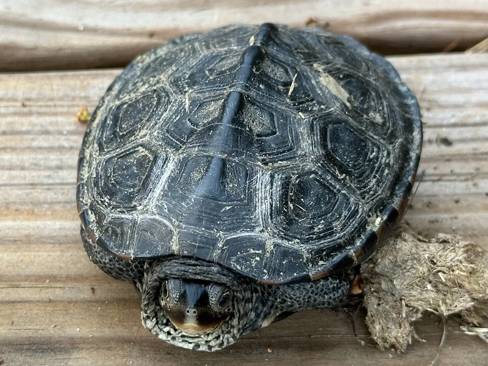

北米東海岸の汽水域（マングローブ・塩性湿地）に生息するテラピン。汽水（塩分）管理が必要な特殊飼育種。

1年後の甲長は7〜11cm程度。マサチューセッツ〜ニュージャージー沿岸の塩性湿地・マングローブ域の汽水に生きる種。皮膚の斑点と甲羅の菱形模様が個体ごとに異なり、観察するほど個性が見えてくる。淡水のみでの管理は浸透圧に影響が出やすく、汽水管理が飼育の核心になりやすい。
10年後、オスは甲長12〜14cm程度のまま。メスは18〜23cmに成長する場合がある。汽水管理が継続して必要で、比重計・専用塩の定期使用と60〜90cm水槽が長期飼育の基盤になりやすい。20〜40年の寿命がある。
ノーザンダイヤモンドバックテラピンに適切な汽水環境は、比重計を使った定期的な濃度管理が必要で、「感覚で塩を少し入れる」程度では適切な汽水を維持しにくい傾向がある。また季節によって塩分濃度の調整が必要な場合もあり、単純な一定管理では不十分な局面が出やすい。購入前から比重計の使い方と汽水管理の基本を習得しておくことが安定飼育の出発点になりやすい。
ノーザンダイヤモンドバックテラピンはNorthern Diamondback Terrapinとして知られる上級者向け種です。特殊な飼育環境が必要です。
汽水環境（塩分0.5〜1.5%）での飼育が本種の健康維持に重要です。淡水のみでは長期的に体調を崩します。大型外部フィルターで水質を管理してください。
← 横にスクロールできます
| 種名 | 甲長 | 難易度 | 必要環境 | 特徴 |
|---|---|---|---|---|
| ノーザンダイヤモンドバックテラピン このページ | M（15〜23cm） | 上級 | 60〜90cm水槽 | 本種 |
| マタマタ | 35〜45cm | 上級 | 90cm〜 | 特殊捕食 |
| スジオオニオイガメ | 30〜40cm | 上級 | 90cm〜 | 大型水棲 |
| アジアコガシラドロガメ | 16〜20cm | 中〜上級 | 60cm〜 | CITES II |